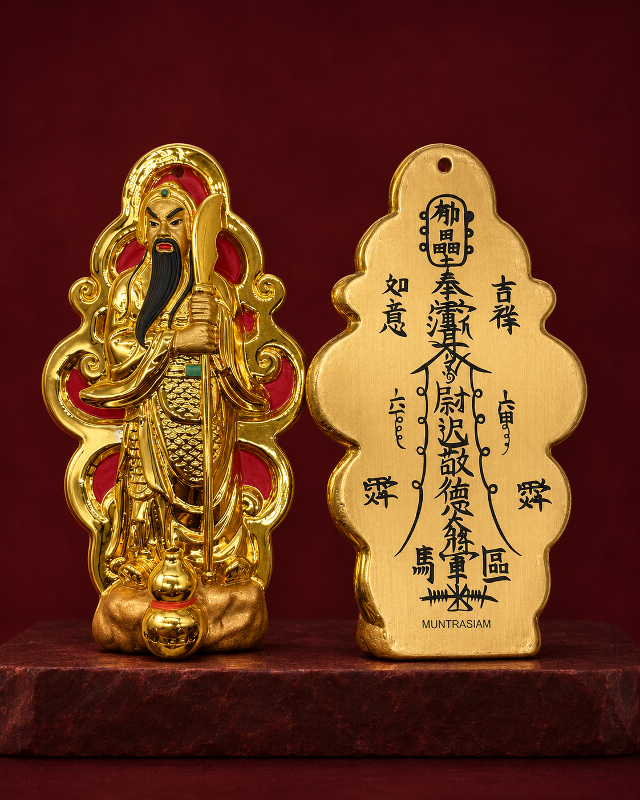

門神 · DOOR GUARDIANS
门神
一对门户守护神
中国传统中守护家宅与吉祥的象征。
门神是门户的守护神，通常成对安置于主要入口，是家宅或供奉空间中另一组具有独立寓意的神祇。

THE MEANING
一对门神的寓意
在传统信仰中，门神守护门户、寓意驱除不祥，并象征居住者的安宁与稳固。
可将正面的神像与背面的符文一同欣赏，下方图集呈现了两面的细节。
PLACEMENT
安置指引
主要入口处
根据空间条件，安置于住宅或建筑的正门。
左右成对安置
保持两尊完整可见，并与门口的位置相协调。
确认所选门神的样式
每尊的位置与朝向，应依据该对门神的样式及 Muntra Siam 的指引。
FORM & INSCRIPTIONS
神像与各尊符文


内容依据所提供的门神资料与品牌方信息整理。供奉方式可随神像样式及主持仪式者的指引而有所不同。